Complete gids voor het gebruik van JW Time
Er zijn nieuwe talen toegevoegd en het beheer van handmatige programma’s en automatische downloads van officiële media is verbeterd.
Bij de eerste start toont JW Time een wizard die de belangrijkste instellingen verzamelt voordat de app wordt geopend. Dit is de aanbevolen route voor een nieuwe installatie, omdat je dan niet meteen elke optie in de instellingenpanelen hoeft te zoeken.
Aan het einde van de wizard kun je JW Time openen en alleen de geavanceerdere opties afronden, zoals Media, Webserver, Opnamen en Back-up.
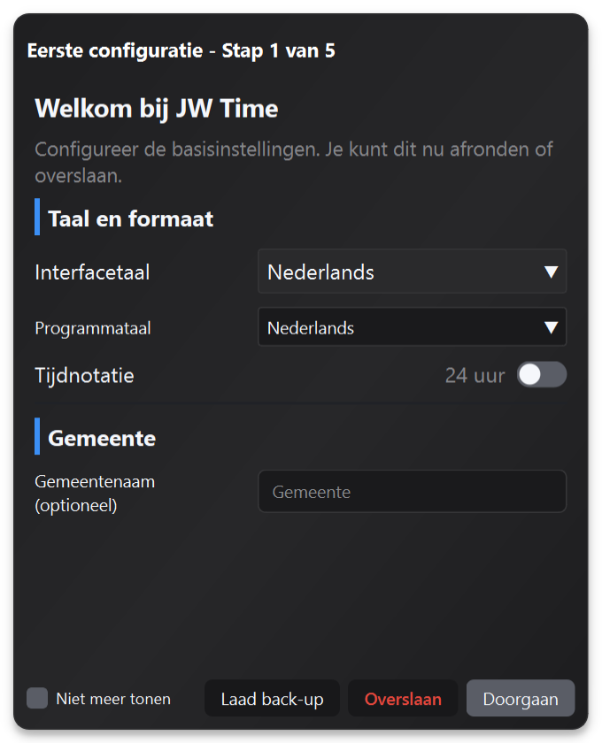
Als je de wizard sluit of overslaat, kun je de belangrijkste instellingen handmatig configureren via Instellingen en het hoofdvenster. Deze checklist dient ook als snelle controle vóór de vergadering.
Ga naar sectie 9 - Algemeen voor taal en tijdnotatie, daarna naar sectie 10 - Gemeenten als je een profiel moet maken of selecteren. Controleer of het geladen schema overeenkomt met de gewenste week en taal.
In sectie 12 - Scherm selecteer je de juiste monitoren en activeer je de vensters die je gebruikt. Zie voor het aanpassen van het uiterlijk van het Contatempo-scherm sectie 5.3 - Het Contatempo-scherm aanpassen.
Open sectie 4 - Media-venster om liederen, video's en afbeeldingen van de week te controleren. De opties voor cache, kwaliteit en achtergrond staan in sectie 13 - Media.
Gebruik het hoofdvenster om timers te starten, berichten naar het Contatempo-scherm te sturen en het REC-paneel te openen. Als je vergaderingen opneemt, controleer dan eerst de opties in sectie 16 - Opnamen.
Als je afstandsbediening, QR of bekijken via browser gebruikt, configureer dan sectie 15 - Verbinding en server. Controleer voor offline werken of het overzetten van configuraties sectie 17 - Pakketten en offline back-up.
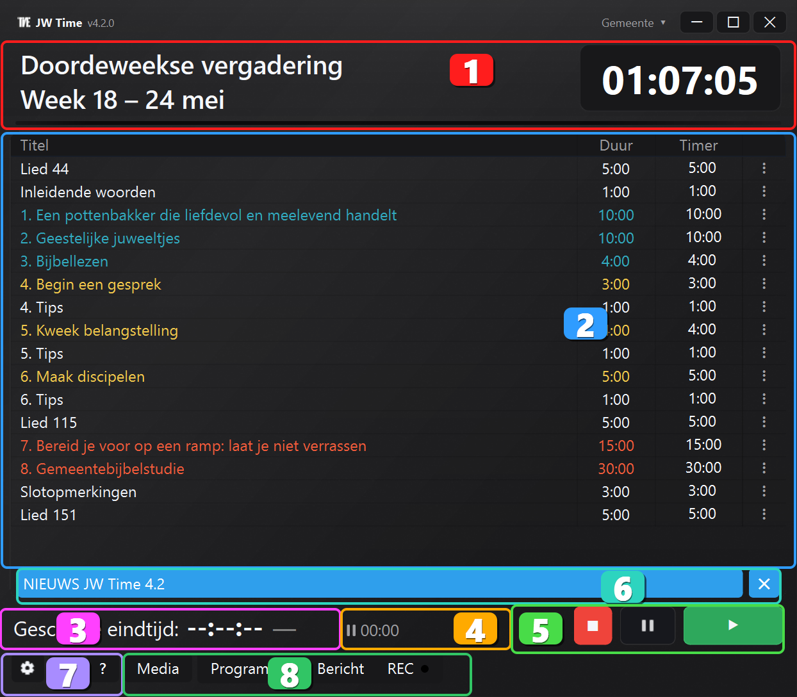
Het hoofdscherm is het hart van de app. Van hieruit kun je alle timers van de vergadering starten, beheren en volgen, de belangrijkste informatie bekijken zoals de titel van het huidige onderdeel, de klok en de resterende tijd, en belangrijke berichten en meldingen controleren.
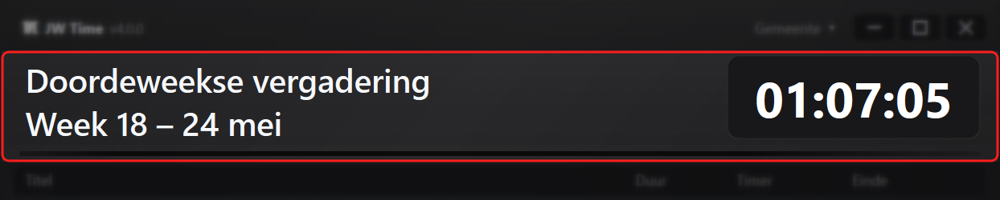
In de bovenste regel wordt de titel van het huidige onderdeel getoond; daaronder staat de klok met de huidige tijd of, wanneer je een timer start, de countdown van de resterende tijd. In 12-uursnotatie verschijnt ook het AM/PM-achtervoegsel kleiner, voor betere leesbaarheid.
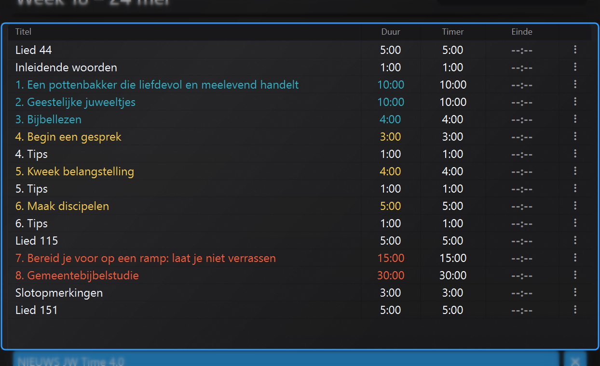
Toont het schema van de vergadering (titel, duur, status). De inhoud wordt automatisch geladen op basis van de geselecteerde dag: de app herkent of het Doordeweeks of Weekend is en stelt het juiste schema voor. Zie voor de knoppen en gedetailleerde acties sectie 3 - Timers beheren.
Als je Kolom Einde tonen activeert in de algemene instellingen, toont de tabel ook hoe laat het huidige onderdeel en de volgende onderdelen zouden eindigen. Dit is geen vaste tijd uit het schema: het is een realtime prognose op basis van de huidige tijd, de resterende timers en eventuele opgebouwde afwijkingen.
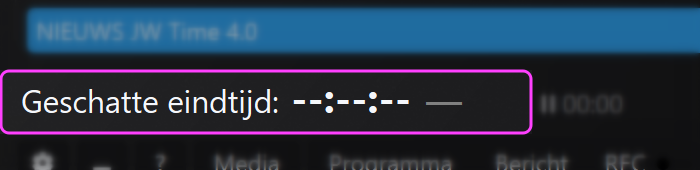
Toont de verwachte eindtijd op basis van het schema. Ernaast staat de afwijking:
+m:ss (geel binnen 1 min., rood daarboven) = achterstand
-m:ss (groen) = voorsprong
De tijd en de indicator worden realtime bijgewerkt. Als de adaptieve Bijbelstudie/Wachttoren-studie actief is, worden de duren herberekend om binnen de eindtijd te blijven.
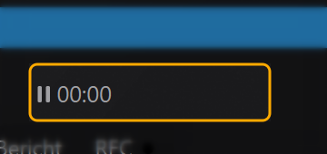
Cumulatieve teller hh:mm:ss van technische pauzes/wissel spreker: telt de tijd op waarin de timer gepauzeerd is. Tijdens de pauze blijft de timer van het onderdeel stilstaan terwijl deze teller oploopt. Een klik op de indicator zet het totaal op nul.

Knoppen om timers te starten, stoppen en beheren: Stop (rood), Pauze en Start/Volgende (groen). De knop Pauze pauzeert de timer van het onderdeel (de teller blijft stilstaan) terwijl de pauzetijd/wissel spreker blijft oplopen. Om de pauze te verlaten druk je opnieuw op Pauze of ga je met Start/Volgende naar het volgende onderdeel: de opgebouwde tijd wordt geregistreerd in de teller van punt 1.4.
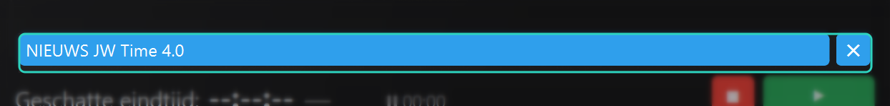
Wanneer er officiële app-communicaties zijn, verschijnt op het hoofdscherm een vak/melding "Nieuws". Door erop te klikken opent het paneel met de samenvatting van de updates.
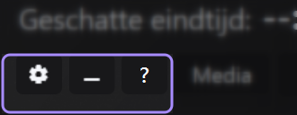
Snelle knoppen om instellingen te openen, het venster te minimaliseren of te herstellen en hulp te openen. Ze zijn gescheiden van de werkmodi om de onderste regel overzichtelijker te houden.
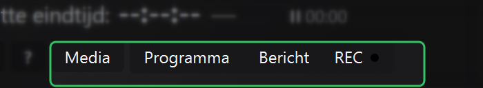
Van hieruit kun je naar het Media-venster, Programma, Berichten en het REC-paneel gaan. De zwarte stip naast REC geeft de opnamestatus aan.
Deze sectie beschrijft de belangrijkste timerhandelingen, zoals items toevoegen, wijzigen of verwijderen, en het gebruik van start-, oversla- en resetopdrachten.
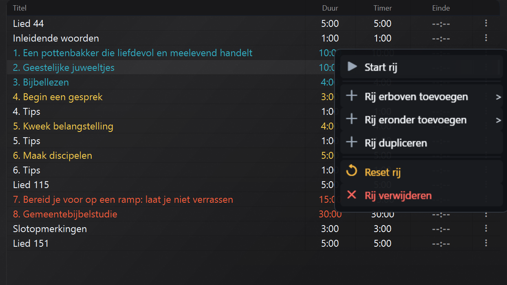
De timer wordt voortdurend bijgewerkt: de hoofd-countdown bovenaan toont de resterende tijd van het actieve onderdeel, terwijl de overeenkomstige rij in de tabel gemarkeerd blijft. De kleur van de bovenbalk volgt de kleur van het huidige onderdeel.
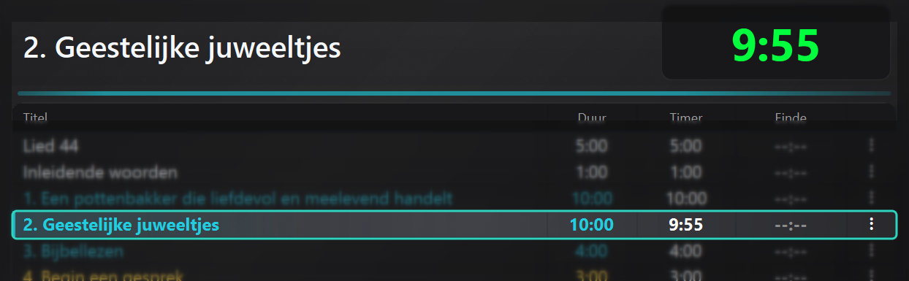
Als je een duur wijzigt of naar het volgende onderdeel gaat, wordt de Geschatte eindtijd meteen herberekend. Zo kun je de delta voor voorsprong/achterstand en de opgebouwde tijd voor pauzes of sprekerwissels controleren zonder andere panelen te openen.
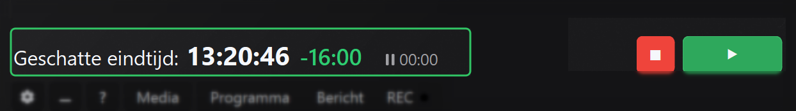
Als Adaptieve Bijbelstudie en/of Adaptieve Wachttoren-studie in Instellingen actief zijn, past de app dynamisch de duur van het geselecteerde onderdeel aan om de eindtijd van de vergadering te behouden. De aanpassing geldt alleen voor onderdelen waarvoor de optie actief is en kan minuten automatisch verhogen of verlagen op basis van opgebouwde voorsprong/achterstand. In de afbeelding wordt de betreffende rij geïsoleerd en wordt de aangepaste waarde oranje gemarkeerd, zodat meteen duidelijk is welke timer is gecorrigeerd. Je kunt altijd handmatig ingrijpen: de adaptieve functie rekent opnieuw vanaf de nieuwe situatie.
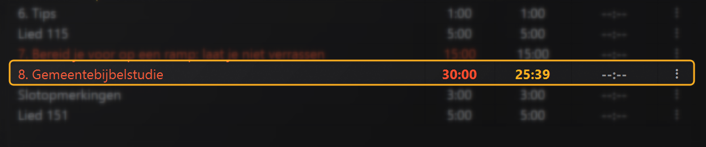
Het Media-venster verzamelt de inhoud die aan de week gekoppeld is: liederen, video's, afbeeldingen en nuttige verwijzingen bij het onderdeel. Het kan de operator helpen de vergadering voor te bereiden, beschikbare inhoud te controleren en die te starten wanneer nodig.
Opmerking over gebruik: het Media-venster biedt de operator een hulpmiddel om al beschikbare multimedia-inhoud voor te bereiden, te controleren en te beheren. Het praktische gebruik hangt af van plaatselijke behoeften en moet altijd in harmonie zijn met aanwijzingen van de gemeente en regelingen. Bij technische noodzaak kan het ook als ondersteunende of reserveoplossing worden gebruikt.
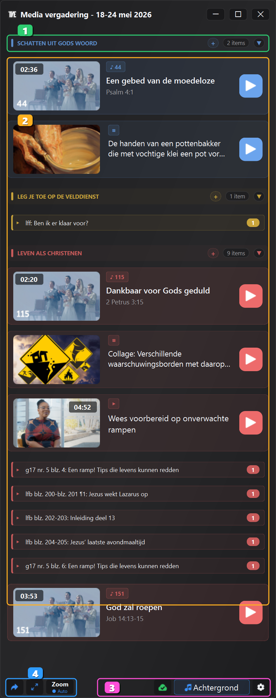
Gebied 1 geeft aan wanneer de officiële media van de week nog niet offline beschikbaar zijn. Je kunt ze meteen downloaden of uitstellen. Hetzelfde gedrag kan worden geautomatiseerd via instellingen sectie 13 - Media, door automatisch downloaden van officiële media te activeren. Onder de waarschuwing vind je de secties van het schema, met gekleurde titel, itemteller en snelle opdrachten.
Opmerking: het downloaden van officiële media vereist dat het netwerk JW Time toegang geeft tot jw.org en de bronnen die voor media worden gebruikt. De alternatieve download die voor programma's is ingevoerd, is niet beschikbaar voor media. Als router, firewall, DNS of inhoudsfilters religieuze sites of toegang van JW Time blokkeren, kunnen officiële media mogelijk niet worden gedownload; in dat geval kun je media gebruiken die al offline aanwezig zijn of handmatig lokale bestanden toevoegen.
Gebied 2 bevat kaarten met voorbeeld, titel, verwijzing en startknop. De kleuren volgen de delen van het schema, zodat je liederen, afbeeldingen, video's en verwijzingen die aan het onderdeel gekoppeld zijn snel herkent.
Via het contextmenu kun je een item handmatig markeren als gebruikt of niet gebruikt. Als de optie Gebruikte media dimmen actief is, blijven gebruikte items herkenbaar met een subtielere stijl. De vensters om officiële video's, audio en afbeeldingen te kiezen bevatten ook de modus Globaal, handig wanneer je buiten de huidige categorie moet zoeken.
Gebied 3 bevat de snelle opdrachten van het Media-venster: gedownloade inhoud, voorbeeld, synchronisatie, achtergrond en speciale instellingen. Het blijft onderaan staan zodat het bereikbaar is, ook wanneer de lijst lang is.
Gebied 4 bevat de Zoom-knoppen van het Media-venster. Ze zijn bedoeld voor wie media ook in videoconferentie toont en met het Openbaar scherm op de zaalmonitor werkt.
Configureer voordat je deze knoppen gebruikt in Zoom een globale sneltoets voor schermdelen en voer dezelfde combinatie in bij sectie 14 - Zoom. Als de twee sneltoetsen niet overeenkomen, stuurt JW Time de opdracht, maar reageert Zoom niet zoals verwacht.
Het paneel Achtergrond beheert muziek vóór de vergadering en, indien ingesteld, ook na de vergadering, zonder die te mengen met de media van het schema. Tijdens het afspelen toont het huidig nummer, volgend nummer, voortgang en duur.
Je kunt starten, pauzeren, naar het vorige of volgende nummer gaan, willekeurige volgorde inschakelen en de playlist openen. Muziekinstellingen, inclusief automatisch gedrag en fades, stel je in via het paneel sectie 13 - Media.
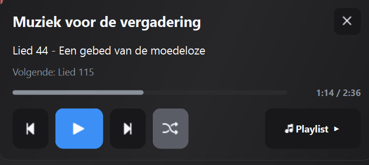
JW Time 4.0 scheidt de weergaven: het Openbaar scherm is bedoeld voor inhoud die zichtbaar is in de zaal, terwijl het Contatempo-scherm bestemd blijft voor wie de tijden volgt.
Het Openbaar scherm toont countdown, welkomstbericht, jaartekst, logo en visuele inhoud in een apart venster.
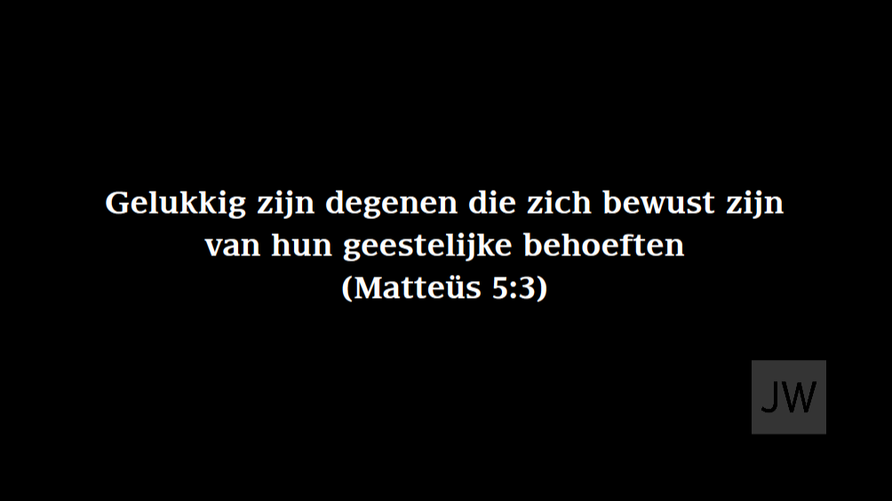
Het Contatempo-scherm toont klok, countdown van het lopende onderdeel, berichten voor de spreker en statussen die met tijdbeheer samenhangen. Het is de meest geschikte weergave voor podium, voorzitter of tijdwaarnemers.
De aanpassing van de lay-out wordt apart behandeld in sectie 5.3 - Het Contatempo-scherm aanpassen, zodat dagelijks gebruik van het scherm gescheiden blijft van grafische instellingen.

Het Contatempo-scherm kan worden aangepast met de knop Aanpassen in sectie 9 - Algemeen.
Je kunt beginnen met een beschikbare preset of de lay-out aanpassen aan je behoeften. Het Openbaar scherm heeft eigen instellingen in sectie 12 - Scherm; hier richten we ons op de lay-out van het Contatempo-scherm.
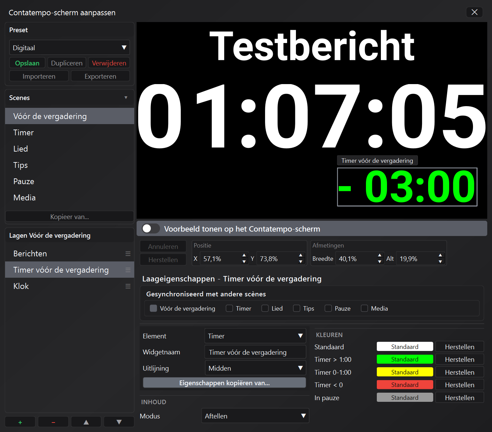
Een preset is een startlay-out.
Je kunt een preset selecteren in sectie 9 - Algemeen en die zo gebruiken, of de personalisatie-editor openen om hem te wijzigen.
De lay-out is georganiseerd in scènes.
Elke scène komt overeen met een andere situatie van het Contatempo-scherm. Zo kun je een andere lay-out tonen afhankelijk van het moment of het type onderdeel dat wordt weergegeven.
Controleer voordat je wijzigingen aanbrengt altijd welke scène is geselecteerd.
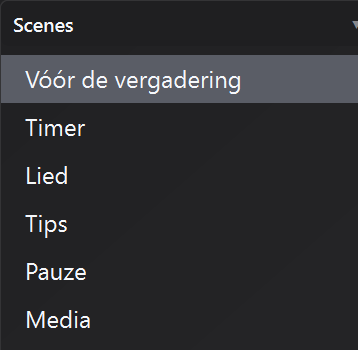
Wanneer je op + drukt in het paneel Lagen, toont JW Time de elementtypen die je aan de scène kunt toevoegen. Sommige lagen lezen echte gegevens van de vergadering en veranderen automatisch; andere dienen om de grafische lay-out op te bouwen.
Het is niet handig om in de handleiding alle eigenschappen van elke laag te tonen, omdat het eigenschappenpaneel verandert op basis van het gekozen type. Hier vind je in plaats daarvan wat elke laag doet en wanneer je die gebruikt.
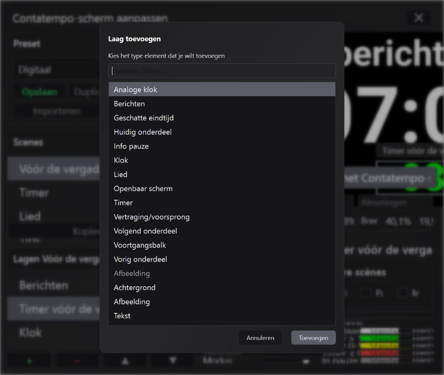
De lagen Achtergrond, Tekst e Afbeelding kunnen meerdere keren worden toegevoegd. Voor andere lagen stelt de editor, als er al een element van hetzelfde type bestaat, voor om het aan een andere scène te koppelen of, wanneer voorzien, een onafhankelijk element te maken.
In de editor kun je de lagen in de geselecteerde scène wijzigen.
Voor elke laag kun je positie en afmetingen op drie manieren aanpassen:
De waarden X en Y bepalen de positie van de laag.
De waarden B en H bepalen de afmetingen van de laag.
Al deze waarden zijn percentages.
In het lagenpaneel kun je ook destapelvolgorde: beheren. Elke laag kan boven of onder andere lagen staan en bepaalt zo wat op de voorgrond verschijnt bij overlapping. Je kunt de volgorde wijzigen door lagen in de lijst te slepen of met de knoppen ▲ e ▼ eronder.
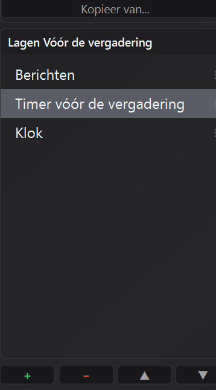
Nadat je een laag hebt geselecteerd, kun je:
Onder het voorbeeld vind je de numerieke velden X, Y, B e H om positie en afmetingen nauwkeurig aan te passen.
Sla na de wijzigingen de lay-out op en pas die toe. Je kunt de editor op elk moment opnieuw openen om de lay-out bij te werken.
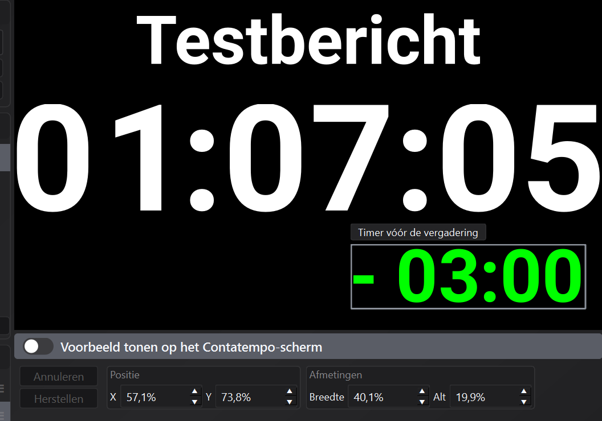
Met de functie Berichten kun je discreet en duidelijk met de spreker communiceren tijdens de vergadering, om hem te waarschuwen of aanwijzingen te geven zonder het verloop van het onderdeel te onderbreken of te storen. De berichten verschijnen op het Contatempo-scherm, zodat de spreker ze realtime ziet zonder afleiding.
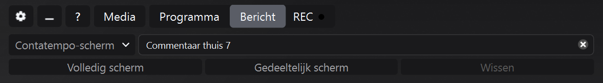
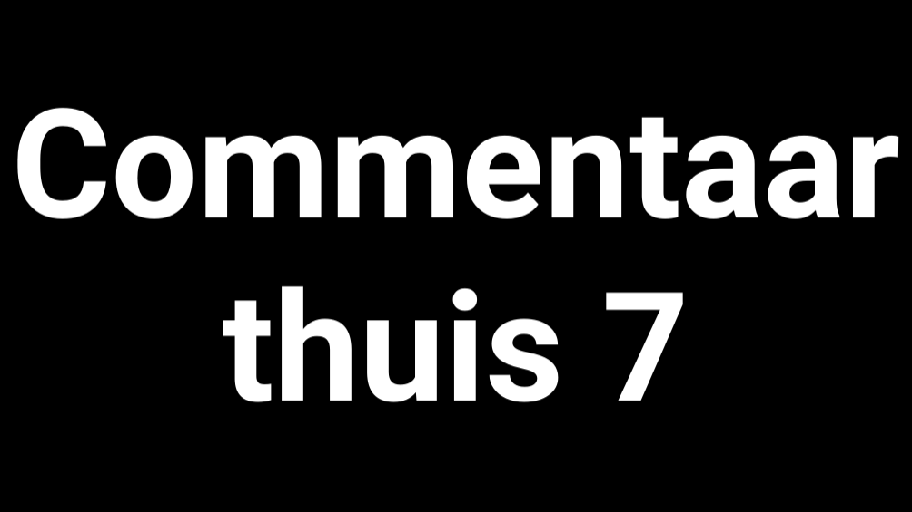
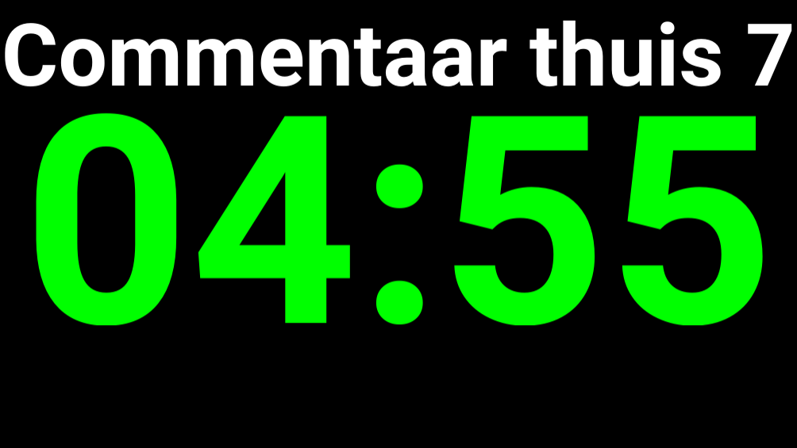
Wanneer je een bericht verzendt, verschijnt automatisch een verplaatsbaar en schaalbaar voorbeeldvenster dat precies toont wat de spreker op de Contatempo-monitor ziet. Zo kun je realtime controleren hoe bericht en timer worden weergegeven.
De knop REC staat in de onderste balk naast Programma en Bericht. De stip naast de tekst toont de opnamestatus (wachten, actief, pauze of MP3-conversie), terwijl het REC-paneel snelle controles biedt om de map JWTimeREC te openen, handmatige opnamen te beheren en de audioniveaus van pc en microfoon te volgen.
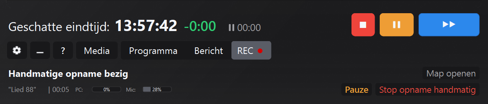
Het REC-paneel bevat knoppen die je kunt gebruiken zonder naar instellingen te gaan:
Wanneer je REC in de onderste balk opent, verschijnt een altijd zichtbaar paneel met opnamestatus en audiometers. Hier kun je handmatige opnamen starten/stoppen, pc-/mic-niveaus volgen en de map JWTimeREC met één klik openen.
Wanneer de Webserver actief is, kun je die vanaf een ander apparaat in hetzelfde lokale netwerk via de browser openen. Zo kun je het Contatempo-scherm bekijken op projectoren, tablets of externe computers; dit is nuttig voor de voorzitter die de timer van de onderdelen volgt.
Zie voor de volledige configuratie van Webserver, afstandsbediening, externe link en QR sectie 15 - Verbinding en server.
Vanuit de browser kun je:
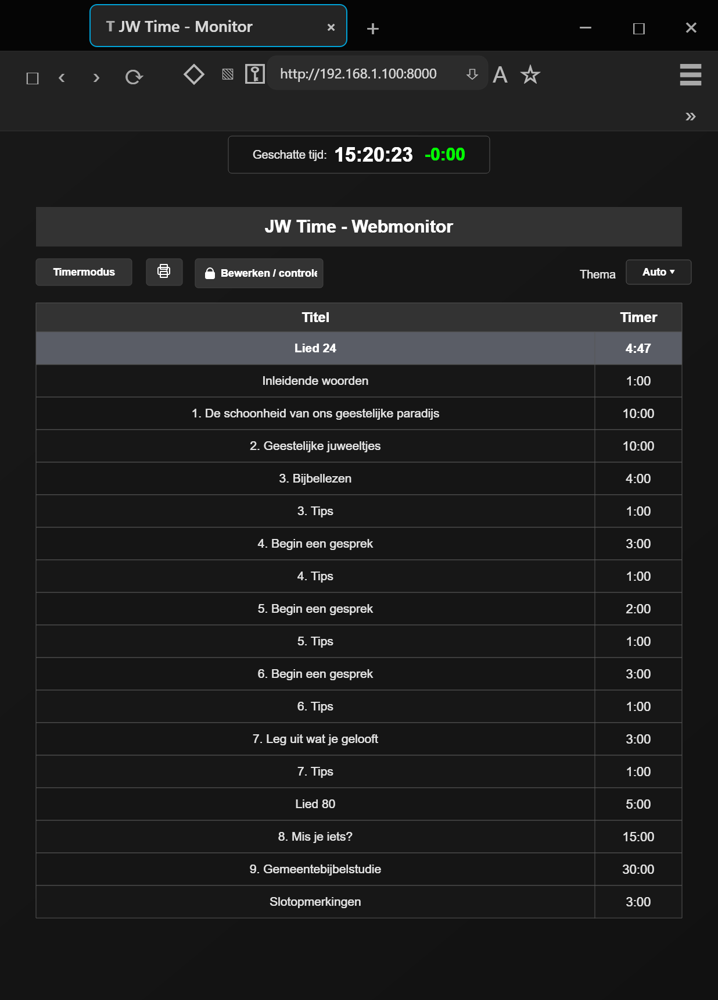
Als afstandsbediening is ingeschakeld, kun je vanuit de browser timer en programma bedienen zonder voor de hoofdcomputer te zitten.
Beschikbare handelingen hangen af van de ingestelde rechten en kunnen omvatten:
Je kunt de Webserver openen door het adres in te voeren dat in de app wordt getoond, of via QR als die beschikbaar is.
Afhankelijk van de configuratie kunnen verschillende toegangsniveaus bestaan, bijvoorbeeld alleen bekijken of bedienen en wijzigen. Als dit is ingesteld, kan toegang een PIN vereisen.
Zie voor de volledige configuratie sectie 15 - Verbinding en server.
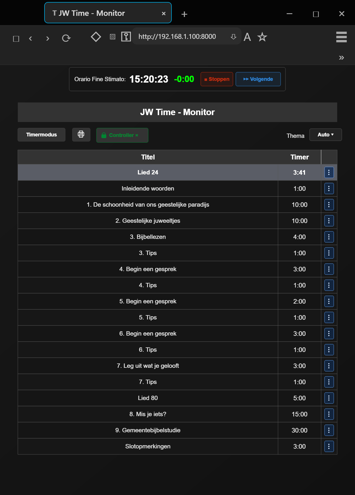
Wanneer degene die JW Time moet volgen of bedienen niet in hetzelfde lokale netwerk zit, kun je een tijdelijke externe link genereren. Dit scenario is nuttig voor vergaderingen via videoconferentie, ondersteuning op afstand of bediening vanaf een apparaat in een ander netwerk.
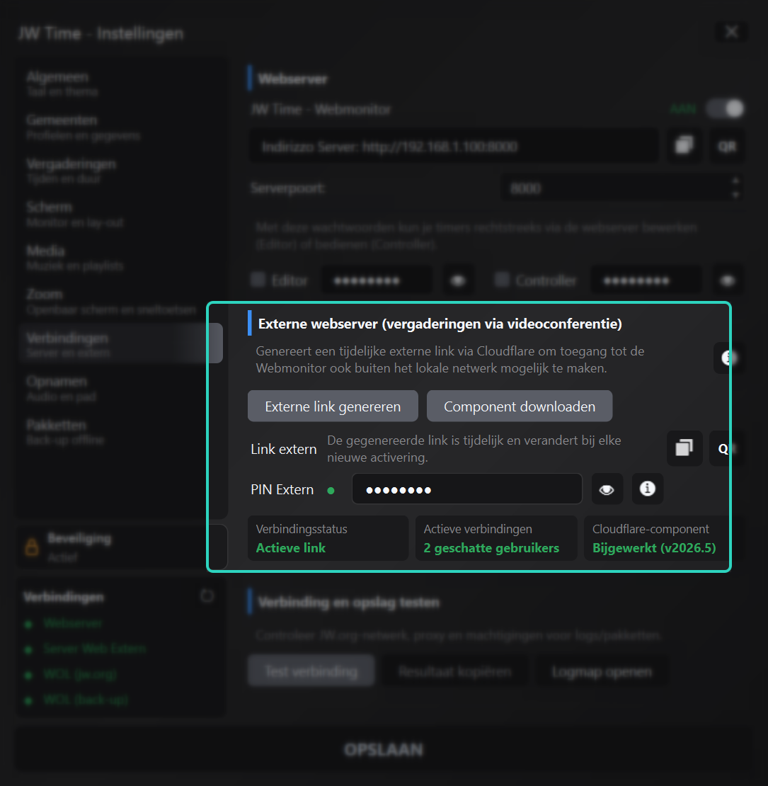
Het praktische deel wordt ingesteld in sectie 15.2 - Webserver op afstand. Zoom-instellingen blijven gescheiden: Zoom beheert delen en sneltoetsen, terwijl de externe link over de Webmonitor gaat.
In dit deel kun je het gedrag van de app configureren: algemene instellingen, gemeenteprofielen, vergaderingen, Contatempo-scherm, Media, Zoom, Webmonitor en server, Opnamen en Back-up en herstel.
De knop OPSLAAN past alle wijzigingen toe.
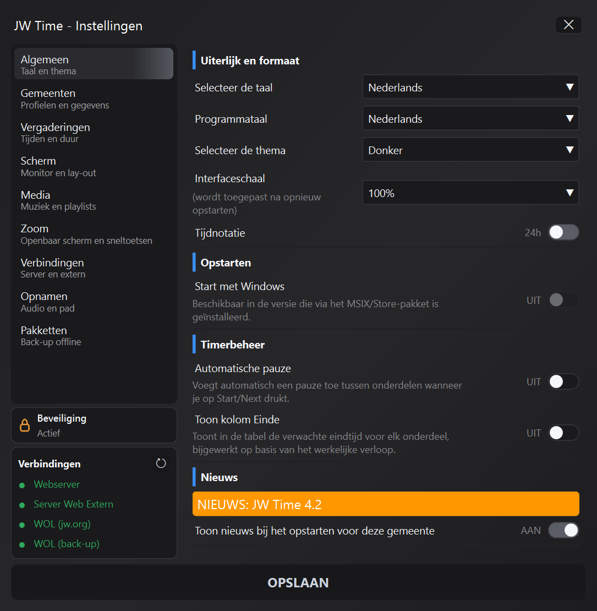
Met dit paneel beheer je gemeenteprofielen. Elk profiel kan eigen configuraties bewaren, zodat JW Time zich aan verschillende situaties kan aanpassen zonder telkens vensters, media en lay-out opnieuw te configureren.
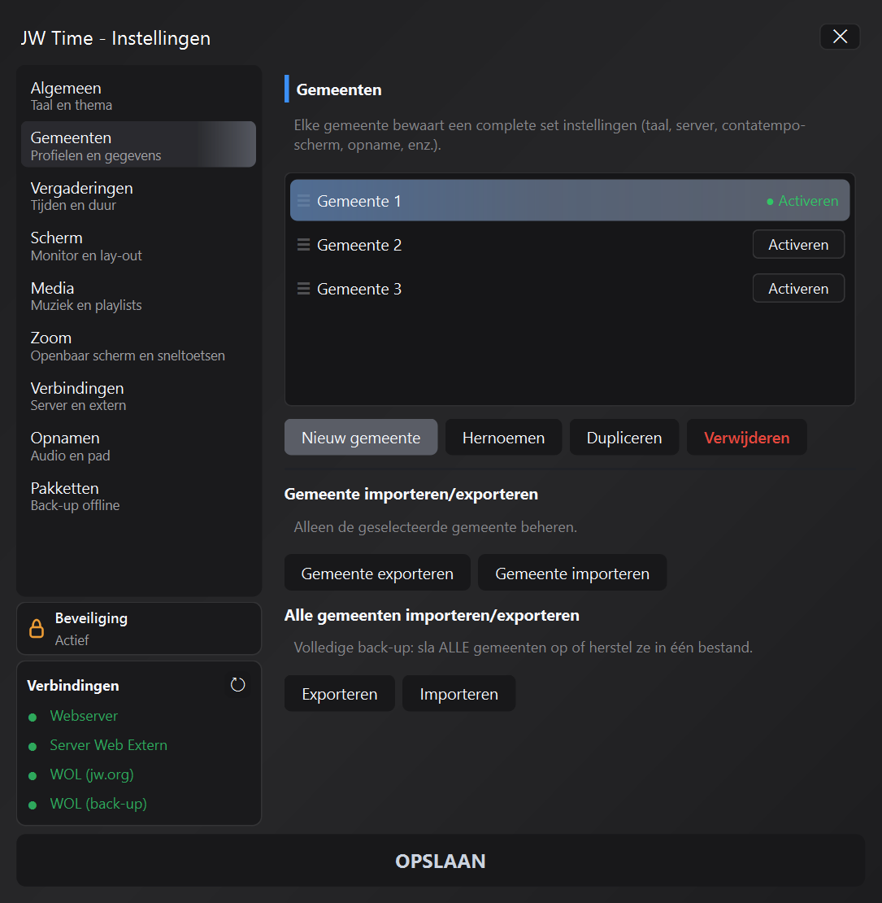
Dit paneel dient om de countdown voor het begin van de vergadering op het Openbaar scherm te plannen. Je stelt dag, tijd en voorsprong (in minuten) in waarmee de countdown moet starten.
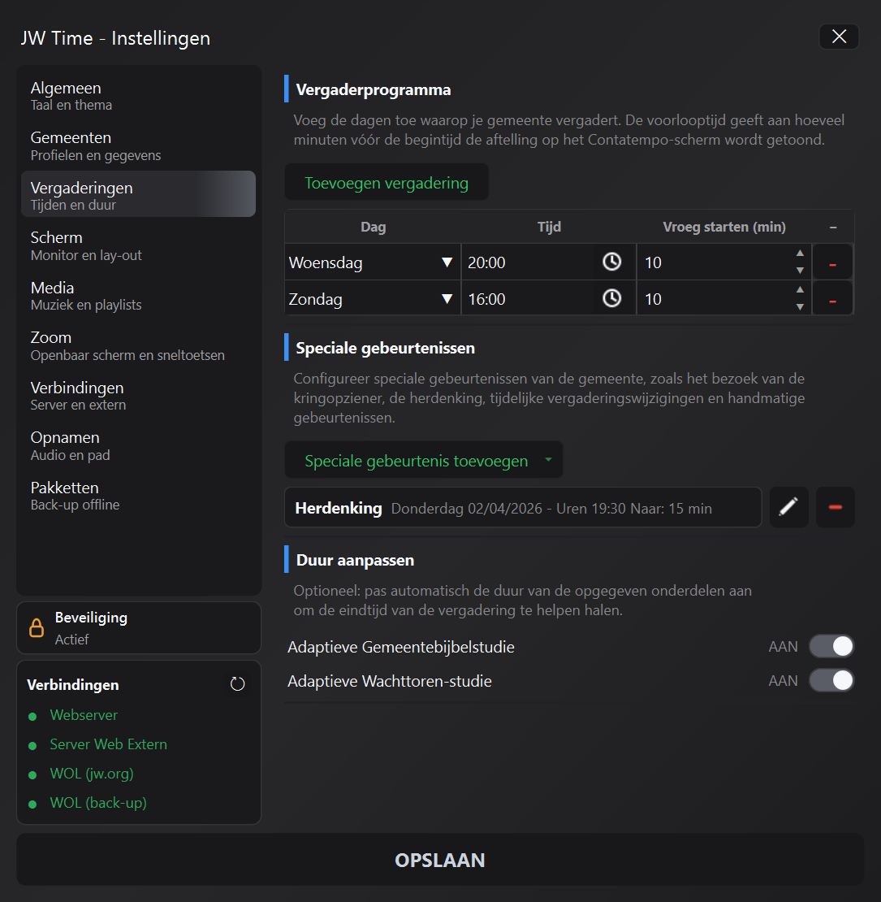
Opmerking: de begintijden dienen voor de openbare countdown; de Geschatte eindtijd hangt af van het schema en eventuele duuraanpassingen.
Dit paneel bevat de instellingen voor het Contatempo-scherm en het Openbaar scherm. Hier kies je waar informatie wordt getoond, hoe die wordt weergegeven en welke elementen zichtbaar zijn tijdens de vergadering.
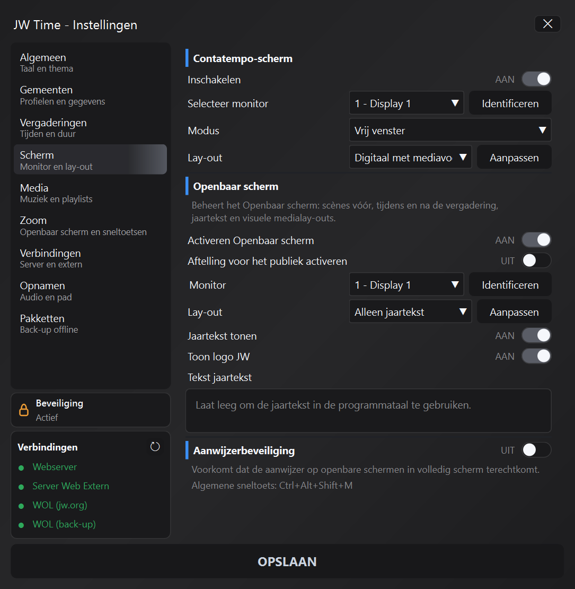
Dit paneel beheert het gedrag van het Media-venster, de lokale cache en opties voor inhoud die tijdens of na de vergadering wordt gebruikt.
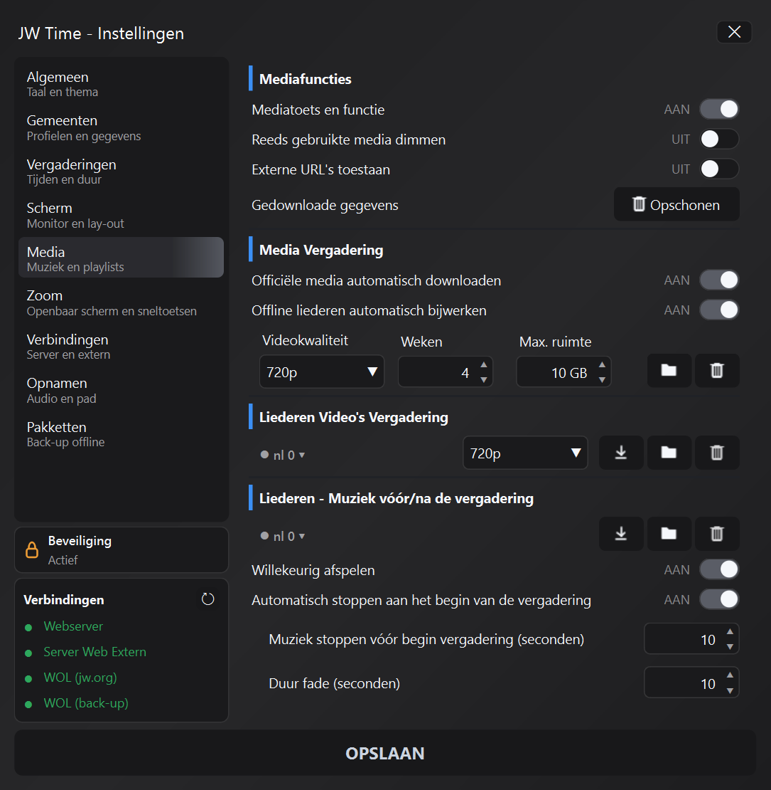
Dit paneel bevat nuttige instellingen wanneer JW Time samen met Zoom of andere zaalconfiguraties wordt gebruikt die speciale audio-/videobediening vereisen. De opties hieronder voeden de Zoom-knoppen in sectie 4 - Media-venster.
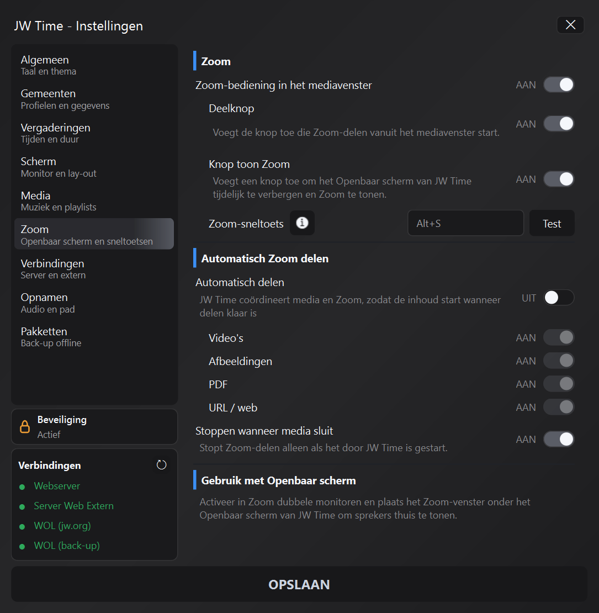
JW Time kiest niet voor jou welk venster of scherm in Zoom gedeeld wordt: het stuurt de toetsencombinatie die je in dit paneel hebt opgegeven. Daarom moet dezelfde sneltoets ook actief zijn in Zoom-instellingen, bij voorkeur als globale sneltoets. Als je in Zoom een andere combinatie gebruikt, kunnen de knop Delen en de modus Zoom Auto niet betrouwbaar werken.
Controleer vóór de vergadering de volledige flow: bereid Zoom voor op de openbare monitor, plaats onder het Openbaar scherm het sprekervenster of het gedupliceerde Zoom-scherm, test de sneltoets met Test en gebruik daarna de bediening vanuit het Media-venster.
Als iemand JW Time buiten het netwerk moet raadplegen of bedienen tijdens een vergadering via videoconferentie, configureer je dat niet in Zoom: gebruik sectie 8.3 - Externe toegang voor vergaderingen via videoconferentie. In dit paneel blijven alleen sneltoetsen, delen en beheer van het Zoom-venster over.
Dit paneel beheert de connectiviteit van de app: de Webmonitor en Webserver voor weergave en bediening vanuit de browser, QR voor snelle toegang, afstandsbediening, geavanceerde verbindingstests en logbeheer.
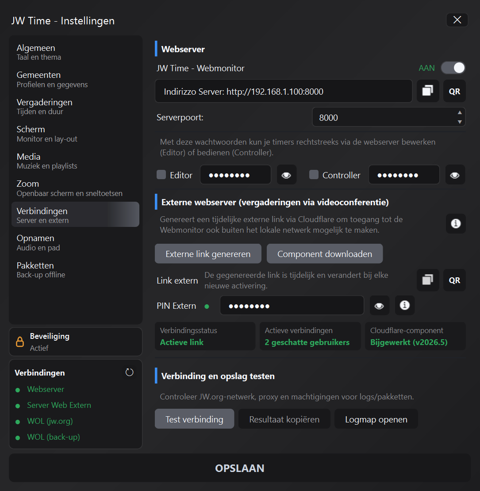
http://192.168.1.100:8000.Wanneer de Webserver actief is, kan JW Time vanaf een ander apparaat in hetzelfde lokale netwerk via de browser worden geopend, om de Webmonitor vanaf telefoon, tablet of andere computer te gebruiken.
Deze sectie dient om de Webmonitor ook buiten het lokale netwerk bereikbaar te maken, bijvoorbeeld tijdens vergaderingen via videoconferentie. Zie voor de gebruikscontext sectie 8.3 - Externe toegang voor vergaderingen via videoconferentie; hier vind je de praktische bediening.
Als de functie is ingeschakeld, kan de Webserver niet alleen voor weergave worden gebruikt, maar ook om timer- en programmahandelingen op afstand uit te voeren. Wanneer de rol Controller is ingeschakeld, toont het webscherm ook knoppen om beschikbare waarden te wijzigen, bijvoorbeeld de duur van een onderdeel.
Daaronder kunnen vallen:
Afhankelijk van de configuratie kunnen verschillende toegangsniveaus beschikbaar zijn, zodat alleen raadplegen gescheiden blijft van bediening of wijziging.
Functie voor audio-opname van vergaderingen, bereikbaar via het tabblad "Opnamen" in instellingen en via de REC-knop in het hoofdvenster.
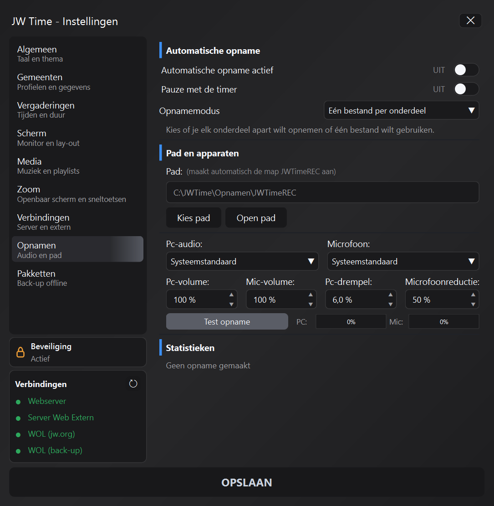
Dit paneel bereidt weekprogramma's voor offline gebruik voor en laat opgeslagen pakketten exporteren of importeren.
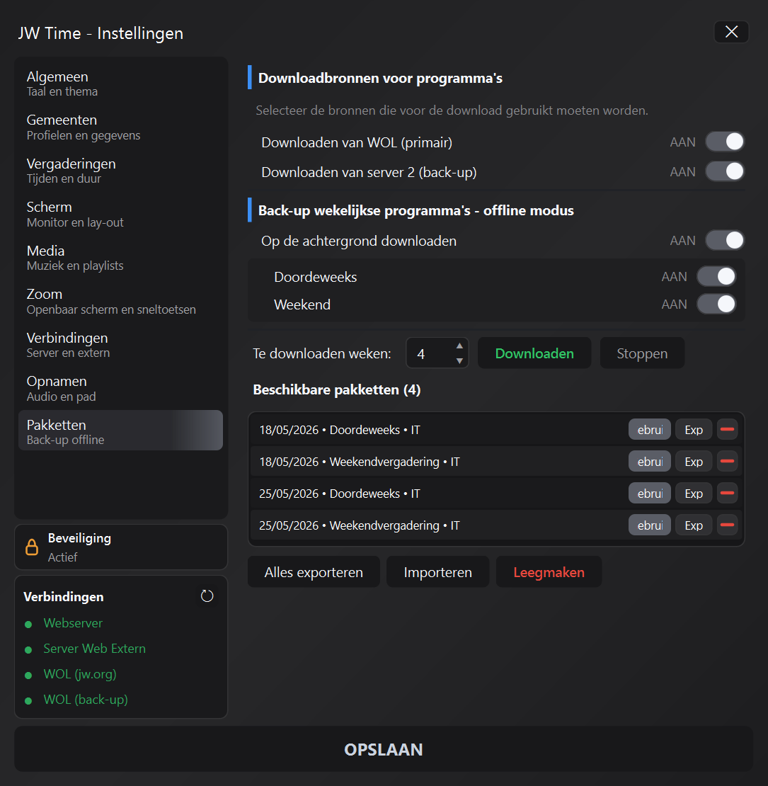